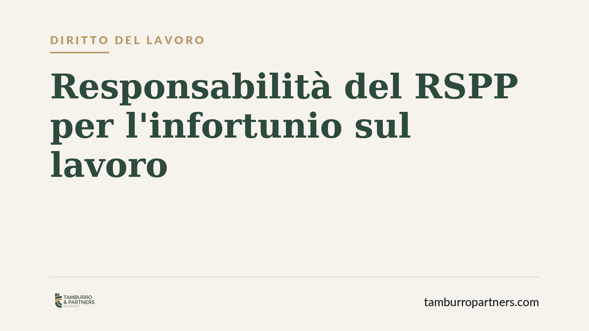

Responsabilità del RSPP per l'infortunio: quando risponde il responsabile sicurezza
Il responsabile del servizio di prevenzione e protezione può rispondere penalmente dell'infortunio subìto dal lavoratore quando le misure di sicurezza aziendali erano insufficienti. La Cassazione ha ribadito che l'imprudenza del dipendente non esclude la colpa del RSPP se il rischio non era stato adeguatamente gestito. Un principio che pesa su aziende, professionisti della sicurezza e datori di lavoro.

Il caso: nastro trasportatore senza protezioni
Un lavoratore riporta lesioni utilizzando un macchinario privo delle protezioni necessarie. La difesa del responsabile del servizio di prevenzione e protezione (RSPP) punta sull'imprudenza del dipendente: sarebbe stata la condotta della vittima a causare l'evento.
La Cassazione penale, sezione IV, con pronuncia recente (numero e data da verificare prima della pubblicazione), respinge questa impostazione. Se il nastro trasportatore era privo delle protezioni imposte dalla normativa, l'imprudenza del lavoratore non basta a interrompere il nesso di causa tra l'omissione del RSPP e l'infortunio.
Inquadramento normativo
La contestazione tipica è quella di lesioni colpose (art. 590 cod. pen.), aggravate dalla violazione delle norme antinfortunistiche. Il meccanismo giuridico che consente di attribuire l'evento a chi non ha agito è l'art. 40, comma 2, cod. pen.: chi ha l'obbligo giuridico di impedire un evento risponde come se lo avesse causato (cosiddetta omissione impropria).
La fonte primaria degli obblighi è il D.Lgs. 81/2008 (Testo Unico Sicurezza). L'art. 33 individua i compiti del RSPP: individuazione dei fattori di rischio, elaborazione delle misure preventive, proposta di programmi di informazione e formazione. Gli artt. 17 e 18 distinguono invece gli obblighi del datore di lavoro non delegabili (valutazione dei rischi e nomina del RSPP) da quelli delegabili.
La natura del RSPP: consulente qualificato, non garante
Il RSPP non è titolare di una posizione di garanzia autonoma come il datore di lavoro. È un consulente tecnico qualificato. Per questo risponde a titolo di cooperazione colposa (art. 113 cod. pen., letto con l'art. 40 cpv): il suo errore o la sua omissione rileva penalmente solo quando ha contribuito in modo causale all'evento.
In concreto: se il RSPP ha omesso di segnalare un rischio evidente, o ha elaborato una valutazione inadeguata, e da quella carenza è derivato l'infortunio, la sua colpa professionale concorre con quella del datore. Se invece aveva correttamente segnalato il rischio e il datore non è intervenuto, la responsabilità si sposta su quest'ultimo.
Il comportamento "abnorme" del lavoratore
La giurisprudenza consolidata della sezione IV, dopo il D.Lgs. 81/2008, esclude la responsabilità del garante solo quando la condotta del lavoratore è abnorme, esorbitante ed eccentrica rispetto al processo produttivo e alle direttive ricevute.
Si è passati da un criterio incentrato sulla mera imprudenza del dipendente a uno più rigoroso: il sistema di sicurezza deve essere progettato per proteggere anche il lavoratore distratto o imperito. Solo una condotta del tutto imprevedibile, estranea alle mansioni e alle prassi aziendali, interrompe il nesso causale. La semplice negligenza operativa non basta. Se il macchinario era privo di protezioni, il rischio era prevedibile e gestibile: l'evento non è imputabile alla sola vittima.
Implicazioni pratiche
Per l'azienda il messaggio è netto: la nomina del RSPP non trasferisce la responsabilità del datore di lavoro. Restano in capo a quest'ultimo gli obblighi non delegabili dell'art. 17.
Per il RSPP: la funzione consulenziale non è uno schermo. La qualità e la tracciabilità del suo operato diventano il perimetro della sua responsabilità. Una valutazione dei rischi lacunosa o una segnalazione mancata possono tradursi in un'imputazione penale.
Cosa fare in concreto
- Aggiornate il DVR (Documento di Valutazione dei Rischi) a ogni modifica di macchinari, lavorazioni o organizzazione: un documento datato è la prima prova di colpa.
- Tracciate le segnalazioni del RSPP al datore di lavoro con data certa (PEC, protocollo interno): la prova documentale distingue chi ha adempiuto da chi ha omesso.
- Verificate materialmente la presenza e l'efficienza delle protezioni sui macchinari, non limitandovi alla previsione formale nel DVR.
- Documentate la formazione dei lavoratori sui rischi specifici, con firma e contenuti, così da poter valutare la reale imprevedibilità di eventuali condotte anomale.
- Distinguete ruoli e responsabilità in un organigramma della sicurezza chiaro, che renda leggibile chi decide e chi consiglia.
---
Contributo informativo a cura di Tamburro & Partners Avvocati - Avv. Giuseppe Tamburro. Non costituisce parere legale.
Ogni storia di lavoro ha i suoi tempi.
Se gestisci HR e vuoi un confronto su contenzioso, ispezioni o licenziamenti, scrivi allo studio. Ti rispondiamo entro un giorno lavorativo.